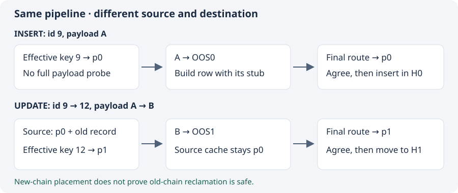

Goal: explain one INSERT and one moving UPDATE. Assume p0: id < 10, p1: id ≥ 10, heaps H0/H1 and their optional OOS files OOS0/OOS1. The example payload is large and uncompressed. No SQL was run for this lesson.

INSERT: 9 and payload A
attr_infoholds values, assignment states and class metadata—not a final disk row. There is no old record for INSERT.partition_prune_insert_by_attrinfoprepares the effective key 9 and uses the existing expression evaluator to choose p0. It does not serialize unrelated payload A.- The owner-aware first pass writes A to OOS0 and builds a row containing its inline stub. Copyarea and payload serialization still exist.
locator_insert_force_internalroutes that actual row again. It checks agreement and retains representation handling, locking, caches and heap/index insertion into H0.
Source: locator_sr.c:7767–7815 at local commit 213ce80f5; see the source register.
UPDATE: 9 → 12 and A → B
- The existing locator path supplies the old record from p0. Its representation and unchanged attributes still matter.
partition_prune_update_by_attrinfoprepares assigned key 12 and chooses p1. Source p0 and destination p1 are deliberately separate.- The normal first pass writes new B into OOS1 while retaining the source cache identity. Under this revision's no-chain-reuse implementation, even unchanged OOS values are freshly serialized; a move does not authorize sharing p0's chain.
locator_update_forceroutes the serialized row, checks agreement, refreshes source identity and performs existing cross-partition movement/index handling.
Old A is not disposable just because new B exists. SERVER old versions and rollback can need A; SA eager cleanup has different timing. The known CBRD-27237 failure leaves post-rollback vacuum safety unproved. Sources: locator_sr.c:7688, 7767, 6014; UPDATE source/evidence report.
What did the change actually remove?
The original implementation first built an inline row. If it would demote values, it routed and rebuilt with OOS. The committed change prepares the key first, then performs one normal full-row transformation. Actual buffer retries and OOS serialization remain. Non-OOS rows in the old version already used one full transform—do not infer a universal speedup.
Explain the boundary
Early routing chooses p1 for the moving UPDATE. Why must the source cache still identify p0? If final routing disagrees, should the code switch the owner or reject the write?
Compare after answering
The old row, its representation and unchanged attributes still come from p0. Destination override controls where new OOS values are written; it must not disguise the source. Final disagreement rejects the write through transactional error handling. Redirecting chains after they were written could leave ownership inconsistent.
Next: why “effective”?
After this checkpoint, trace omitted defaults, supplied old values, and pending INCR/DECR. The temporary key predicts the stored value without consuming the real assignment.
Primary reading: local 213ce80f5:src/transaction/locator_sr.c, starting at line 7767. This local commit is not assumed published on GitHub. The Markdown companion lists the exact functions and source lines.
Ask the agent to unpack any pointer, flag or source line. We will record demonstrated understanding, not just lesson exposure.